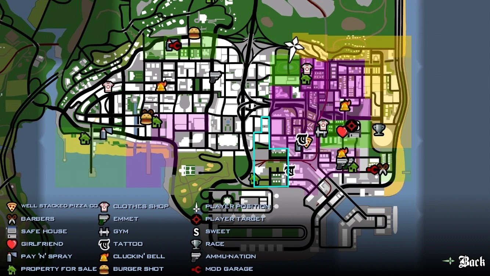

A Grove Street Families é uma gangue de rua afro-americana e uma das gangues de rua mais antigas de Los Santos , San Andreas. Eles também são uma gangue nativa do protagonista Carl Johnson. Eles são o inimigo jurado dos Ballas, uma rivalidade intensa e contínua como parte das guerras de gangue entre os Ballas e o Grove. Como Famílias também mantém rivalidades com duas gangues mexicanas em Los Santos ( Los Santos Vagos e Vários Los Aztecas ). Sua rivalidade com Varrios Los Aztecas não é tão curta quanto Ballas e Vagos. No entanto, como duas gangues ainda lutam normalmente. Kendl (Irma fazer líder da banda) acaba namorando o Líder dos Aztecas enquanto CJ faz amizade com ele, para a desaprovação de Sweet.

Os Ballas são a principal gangue inimiga de CJ em GTA: San Andreas. Embora seus membros não sejam muito desenvolvidos ao longo da história, eles ainda desempenham um papel significativo, uma vez que a trama gira em torno de uma guerra de gangues. Além disso, o game da Rockstar conta com uma mecânica de domínio de territórios, e esse grupo pode atacar CJ a qualquer momento, especialmente se ele estiver vestindo verde
Os Vagos é uma gangue hispânica sediada em Los Santos (SA). Assim como seu principal aliado, os Ballas, tem como objetivo principal destruir a The Families e intensificar o comércio de drogas, prostituição, tráfico de armas e entorpecentes em Los Santos e Las Venturas.
Os Varrios são uma gangue de rua mexicana/latina extremamente orgulhosa, e controlam El Corona , Little Mexico e Unity Station . Eles são a menor gangue da cidade, mas provavelmente são uma das mais fortemente armadas, o que lhes dá poder sobre as outras gangues.
Essa gangue não pode ser dominada.
